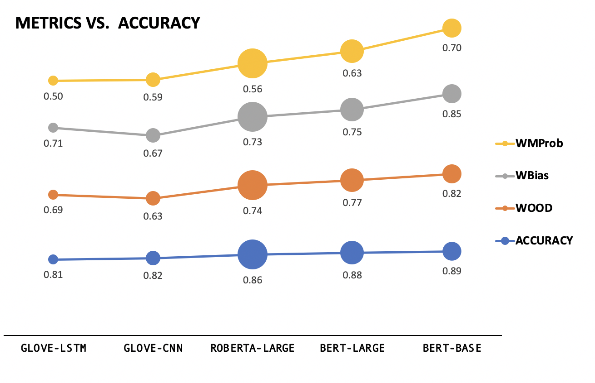
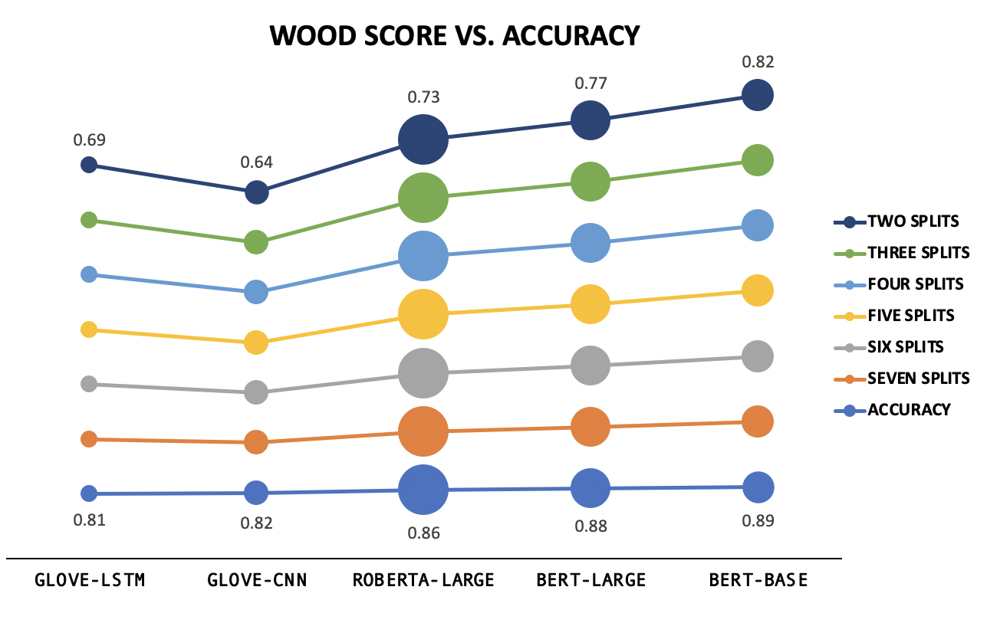
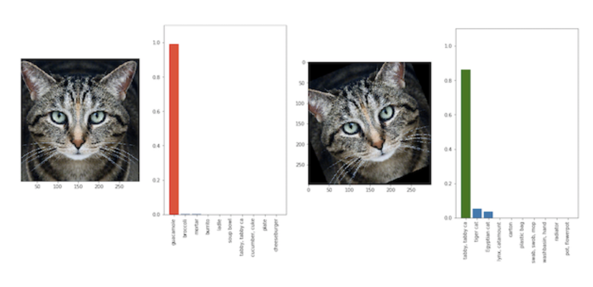

A Visual Exploration of Fair Evaluation for Machine Learning
Bridging the Gap Between Research and the Real World
By Anjana Arunkumar, Swaroop Mishra, and Chris Bryan.
This page is a companion to
a line of work, which introduces new fair and robust evaluation
metrics to encourage model generalization.
In artificial intelligence (AI) and machine learning (ML), leaderboards provide rankings of models trained for a given task.
Generally, leaderboards provide one or more datasets (also known as a benchmark), which models must use to solve some kind of
classification or regression task (such as sentiment analysis and question answering)
Benchmarks are often split into three subsets, called train, dev, and test, with train and dev datasets being
made publicly available. If you want to develop a new model to try and attain a place on a leaderboard, you train the model using
the train subset and evaluate its performance using the dev subset. You upload the model code to the leaderboard's submission site
where moderators test it using the non-public test subset. Based on this performance, the model might appear on the leaderboard in a ranked position.
For example, here is a screenshot of a leaderboard from Allen AI for August 2020.
Listed are models in decreasing order of accuracy on a question answering dataset called Physical IQA. Question answering is the task of building systems to
automatically answer questions posed by humans in a natural language. Physical IQA contains questions regarding our knowledge about the Physical World.
Physical IQA - Physical Interaction QA
Main Leaderboard
Models are listed in decreasing order of accuracy on Physical IQA
Human Accuracy Human accuracy for a dataset is measured by asking a set of people to answer the same test set questions provided to the model
Line Chart
Included on the Allen AI page, this shows the accuracy of models submitted over time, with human accuracy as the standard to beat
Also present on the page is a line chart, which plots the accuracy of models submitted over time, using 'human accuracy' on the dataset as the standard to beat. Human accuracy is measured by asking a set of people to answer the same test set questions provided to the model.
AI/ML leaderboards have been around for several years now, and competition to become the top-ranked model is fierce. Increasingly, top-ranked models
are becoming larger and more complex. Unfortunately, we are increasingly seeing a gap where, just because a model tops a particular leaderboard,
there is no guarantee that the model will actually be deployed in the real-world.
To help understand why high-performing leaderboard models don't necessarily translate to effective real-world usage, let's explore how AI/ML models are evaluated.
Do the evaluation metrics we use fairly evaluate?
There are a plethora of candidate evaluation metrics, including precision, accuracy, recall, F1 score, specificity, confusion matrix, etc.
Here, we focus on accuracy:how many data samples are correctly answered out of the total number of tested samples?
Essentially, accuracy is computed by assigning samples correctly answered with a weight of 1, and samples incorrectly answered with a weight of 0.
This is by far the most common way that leaderboards evaluate model performance.
SST-2 (Sentiment Analysis) Test Set Predictions
Ranking
Models are arranged in increasing order of accuracy
Red
samples are incorrectly classified
Green
samples are correctly classified
STS and Hardness
The y-axis measures the average similarity of each test set sample with the top 25% of most similar train set samples
OOD
Samples which are less similar to the train set are harder for models to solve (Mishra et.al.)
Inconsistencies
High accuracy models like BERT-BASE fail on easy (high STS value) samples
Consider the models plotted in the above beeswarm plots. Each plot shows the predictions for a model. Color indicates correctness and vertical position
indicates the sample difficulty (ranked based on sentence similarity of each considered dev set sample with respect to the train set). Model X answers more of
the "tough" questions than Model Y, but it has a lower overall accuracy percentage. Such "tough" questions can be
considered akin to out-of-distribution (OOD) samples; patterns/skills that the model learns from the train set cannot directly be applied to solve such samples.
Does this mean X is better than Y? Not necessarily, as it depends on the application scenario!
Consider a chocolate factory, where robotic components are monitored by a trained model, to account
for temperature and consistency during the manufacturing process. In such a scenario, the model is not likely
to experience significant environmental variation. In this case, correctly answering a higher number of overall samples is the most
important consideration, as OOD samples are rare, making naive accuracy an appropriate evaluation metric.
However, as different application domains contain different priorities and requirements, alternative evaluation metrics are increasingly vital to
ensure fair and robust model evaluation. Fortunately, recent research in this area has led to several newly proposed metrics that can be employed based
on a domain's semantics.
Here, we explain three recently introduced metrics which can be considered as alternatives to naive accuracy: WBias,WOOD, and WMProb.
These metrics tweak how accuracy is calculated by using different weight assignment schemes - positive for correct answers, and negative to impose penalties for
incorrect answers - and can be tailored based on a specific application domain.
Metric Comparisons on SST-2
Metrics Vs. Accuracy
While accuracy increases montonically, from the line plot, we see that the scores for the three new metrics do not.
Magnitude
The scores are also much lower than the accuracy values.
WOOD Vs. Accuracy
While WOOD Score values remain more or less constant over splits when identical weights
are assigned, WOOD also displays non-parallel behavior to accuracy.
Size
Size indicates the amount of computational resources invested in developing the model.


To provide an overview, let's first plot naive accuracy against WBias, WOOD, and WMProb using the above line charts.
The models are ordered based on naive accuracy, but this ranking is not maintained across the alternate metrics. Let's look at the three alternative
metrics to see how they evaluate model performance.
First, let's define each metric and consider their intuitions:
WBias, or weighted bias score, attaches lower scores to more biased(easily predictable) samples. Bias refers to
unintended correlations between model input and output (e.g.: if words like 'not' or 'no' are present in a sample, a biased model might label the sample as having negative
sentiment as it has seen many similar cases during training). An example where WBias is apt for evaluation is seen in the adjoining screenshot- machine translation from German to English is incorrectly
gendered due to training set bias. In essence, WBias tries to estimate the level at which a model "hacks" the dataset as opposed to learning the
task.
SST-2 Test Set : WBias Score
Ranking
Models are arranged in increasing order of accuracy
Predictability Score and Hardness
The y-axis measures the predictability scores of samples
Predictability
The score is calculated by finding the
number of times a sample is correctly predicted across 128 iterations using linear models such as SVM and Logistic Regression.
Splits
The dataset can be divided into 'n' equal splits or 'n' splits based on thresholds.
Color and Size
Color indicates the splits, and size indicates if the model
predicts the label incorrectly (smaller) or correctly (larger).
Comparison
Thresholded splits show more significant variation in split-wise model performance than equidistant splits. For example,
4 thresholded splits show that Bert Base and Bert Large performance with respect to each split are almost identical.
WOOD, or weighted out-of-distribution score, tries to assess whether or not a model is likely to answer OOD samples correctly.
Samples are ranked using semantic textual similarity (STS, i.e., sentence similarity of test set samples with respect to train set samples), which
is an indicator of OOD characteristics. Samples with higher STS scores are weighted lower, as they are more likely to be in-distribution (IID). For example, conversational
agents are likely to experience a varying range of input, and thus WOOD Score is an important facet of model evaluation. In essence,
WOOD tries to estimate the range of samples that your model should be able handle.
SST-2 Test Set : WOOD Score
Ranking
Models are arranged in increasing order of accuracy
STS and Hardness
The y-axis measures the semantic textual similarty (STS) of samples with respect to the train set.
STS
The score is calculated by taking the average of STS values for each sample with respect to the top n% of the train set. Throughout, we measure WOOD Score using the
top 25% most simlilar train set samples for each test set sample.
Splits
The dataset can be divided into 'n' equal splits or 'n' splits based on thresholds.
Color and Size
Color indicates the splits, and size indicates if the model
predicts the label incorrectly (smaller) or correctly (larger).
Comparison
WOOD Score values in the case of seven equidistant splits show that BERT-LARGE and BERT-BASE have very small differences in performance. Interestingly enough,
while ROBERTA-LARGE has an overall higher accuracy than GLOVE-LSTM, even if weighted and summed split-wise, it performs significantly worse on split 1, which contains the highest STS
(i.e., easiest) samples. This can be attributed to ROBERTA-LARGE forgetting portions of what it has learned during train, due to model size.
WMProb, or weighted maximum probability score, weights predictions according to the model confidence. Unfortunately, models sometimes provide
clearly incorrect predictions with high confidence. A sample with high confidence that is incorrectly predicted will hurt the score more than a sample
incorrectly predicted with low confidence. For example, in facial recognition, sometimes, tilted images are not recognized correctly- the adjacent image shows how
a tilted cat is classified as guacamole, with high confidence; WMProb can be the guiding evaluation metric for such scenarios. In essence, WMProb tries to penalize confident-but-incorrect predictions, while predictions with low confidence
(where the model essentially says "I don't know!") are less detrimental.

SST-2 Test Set : WMProb Score
Ranking
Models are arranged in increasing order of accuracy
Predictability Score and Hardness
The y-axis measures the confidence of sample predictions
Predictability
The score is calculated by weighting predictions according to their confidence and summing. Higher weightage is given to low-confidence samples. The aim is to
encourage the model to abstain in incorrect scenarios, rather than offering a wrong answer.
Splits
The dataset can be divided into 'n' equal splits or 'n' splits based on thresholds.
Color and Size
Color indicates the splits, and size indicates if the model
predicts the label incorrectly (smaller) or correctly (larger).
Comparison
Here, across all splits, we can see that a significant proportion of the models predictions have confidence levels >0.9. In case of thresholded splits,
this renders the low confidence (difficult) sample splits sparsely populated. However, by penalizing models through WMProb, we see that significant ranking changes occur
as in the case of five thresholded splits. On assigning negative weights to split 5, BERT-BASE no longer displays the highest model performance. Similarly, in the case
of Split 1, GLOVE-LSTM performance is the same as that of BERT-BASE.
For better understanding of the case studies, we walk you through how WOOD score is calculated below. WBias (ranks based on confidence) and
WMProb (ranks based on predictability of samples) are similarly calculated (with the exception of step (ii)).
Calculation Steps:
(i) We find the sentence similarity of test set samples with respect to each of the training set samples.
(ii) We average the similarity of each test set sample with respect to the top n% similar samples to the training set.
(iii) We rank samples in decreasing order of this averaged similarity.
(iv) We split the samples into either equal splits or on the basis of thresholds.
(v) We assign weights for each split. The imposition of penalties for incorrect answers is also defined. The weights can be discrete or continuous.
(vi) We calculate the normalized score.
The common trend in the metrics we analyze is that irrespective of the hardness scale's basis, the three weighted metrics assign lower weight to "easy questions ""
and higher weight to "hard questions" (though, what defines easy and hard differs between each metric). Why is this helpful? In the same way that competitive exams like GMAT and GRE scale points according to the effort
required to solve a question, the metrics assign weight based on the model 'effort' required for a correct answer.
Below, we show how the weight scale used can be either continuous or discrete (splitwise). Discrete assignment can involve splits of equal/unequal size. Multi-grained comparative
model analysis using different subsets of data can be performed to find the points at which model rankings change (i.e., accuracy's results are broken). Initially,
the metric for analysis is selected and the beeswarm and overall accuracy graph for the models is displayed. Then, based on split creation, the accuracy chart is
replaced by a parallel coordinates plot which compares model performance at each split.
SST-2 Test Set : Model Ranking
Accuracy
Models are arranged in increasing order of accuracy. On changing the metric, the accuracy ranking of models is displayed below the beeswarm.
WOOD Score
The overall WOOD score of the model decreases in the scenario when those samples with low STS (i.e., higher OOD characteristics) are predominantly negatively weighted, as the absolute weights assigned for those samples are higher. This implies that the model is unable to generalize (perform well on OOD data) effectively. WMProb Score
If more incorrect samples are associated with high model confidence, the overall WMProb score of the model decreases. This shows that the model is unable to handle OOD data effectively, and that increases seen in its OOD performance might stem from non-learning related factors.
WBias Score
If those samples with low predictability scores (i.e., low spurious bias) are predominantly negatively weighted, the overall WBias score of the model will decrease as the absolute weights assigned for those samples are higher. This scenario would indicate that the model is over-reliant on spurious bias.
Comparison
Let 'n' be the number of splits. To determine split wise accuracy of models, we either assign continous normalized weights, or assign weights for 1 split at a time as follows:
(i) Correct Samples: +n Incorrect Samples: -n
(ii) Correct Samples: +n Incorrect Samples: 0
(iii) Correct Samples: 0 Incorrect Samples: -n
(iv) Correct Samples: +n Incorrect Samples: -n/2
(v) Correct Samples: +n/2 Incorrect Samples: -n
Analysis The split-wise ranking changes vastly from the original accuracy ranking. However, it is not affected
by different weight assignment. Ranking The parallel coordinates plot compares model performance for each split of data, based on the
vertical position of the model's point at each vertical line. We see that there are many crossing lines,
indicating a frequent change in model ranking.
Improving Machine Learning Systems
What kind of samples does a model need to solve more of- hard, easy, or a combination of both? Ultimately, the answer lies with the user,
as does the final choice of model selection.
.Sticking to one accuracy metric, as leaderboards currently do, is increasingly limiting the ability of models to generalize over
diverse usage scenarios. In contrast, by approaching model development and evaluation with multifaceted evaluation metrics, such as WBias,
WOOD, and WMProb, more complex and tailored usage scenarios can be considered. Such metrics can also be applied in current discussion about
fairness in AI/ML, such as mitigating biased benchmarks and overfitted models, providing transparency and interpretability into models,
advancing generalizability and accessibility, and helping developers understand how different sample distributions can affect model performance.